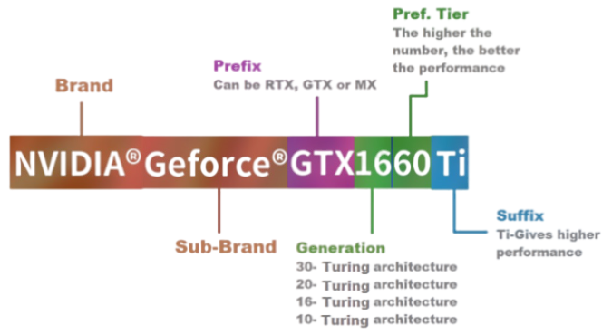
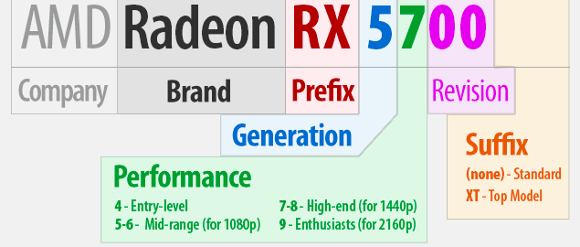
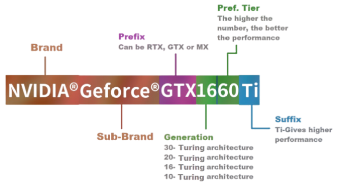
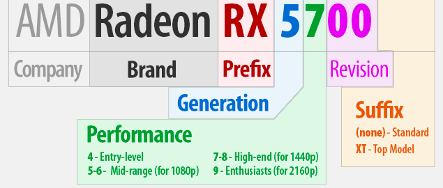

VANGUARD
 Specifications
Specifications
Specifications
Specifications

A CPU is the main processor which executes instructions in a computer program. The CPU performs basic arithmetic, logic, controlling, and input/output operations specified by the instructions in the program. CPU's largest manufacturers of all time are INTEL and AMD. Recently AMD has upped their game to become more of a tough opponent to INTEL. You can learn more about CPUs here.
A GPU is a specialized electronic circuit designed to rapidly manipulate and alter memory to accelerate the creation of images in a frame buffer intended for output to a display device. The top GPUs are mostly made by NVIDIA and AMD. GPUs shine best with NVIDIA's graphics cards but recently AMD has significantly improved their GPUs as well. You can learn more about GPUs here.
 



If you work with lots of photos or videos, a fast GPU is good for editing software. Plenty of well-known editing software applications take advantage of the added raw power of a GPU, including Adobe Photoshop, Lightroom and Premiere Pro (for serious photo editing). On a computer with a powerful GPU, it takes significantly less time to apply complex filters to photos and special effects to videos. That means less time waiting, more time creating.
But the upside is not confined to content creation apps. Web browsers such as Firefox, Chrome, and Edge can all tap into a GPU to improve page rendering times. Streaming video from YouTube and Netflix has to be compressed and decompressed before you actually see it. With a GPU, you’ll probably run into fewer stutters or unwanted glitches as that process plays out.
Companies may even produce their own linup of chips to achieve their goals. As Apple did with their BIONIC Chips, and SAMSUNG did with their Exynos Chips.
Other companies may even not participate in the smart devices industry but will still make efficient chips for the companies that do, like Qualcomm with their very famous SNAPDRAGON Chips.